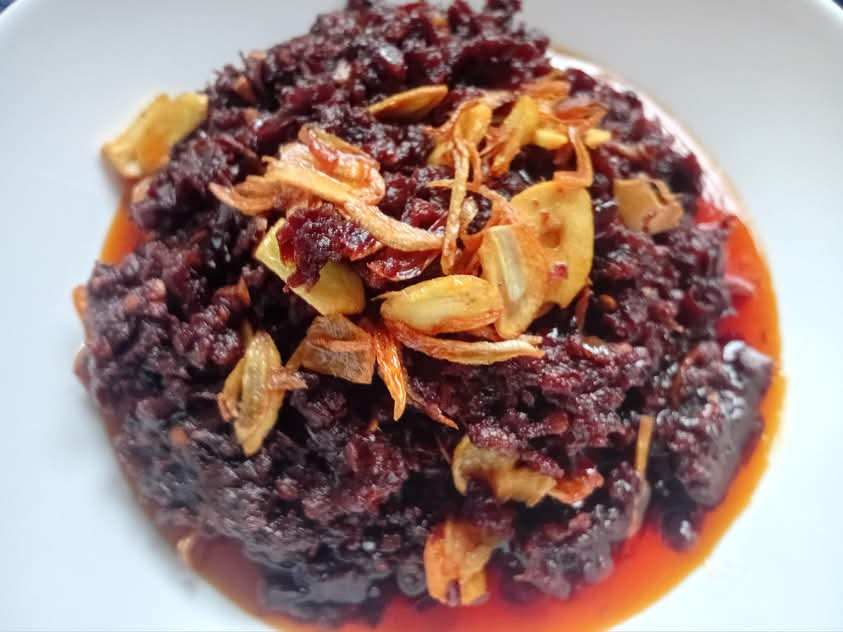
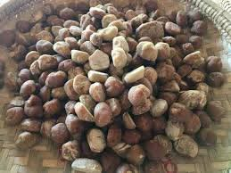
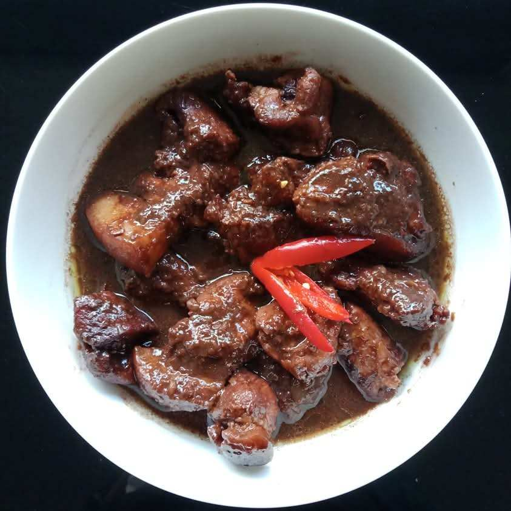
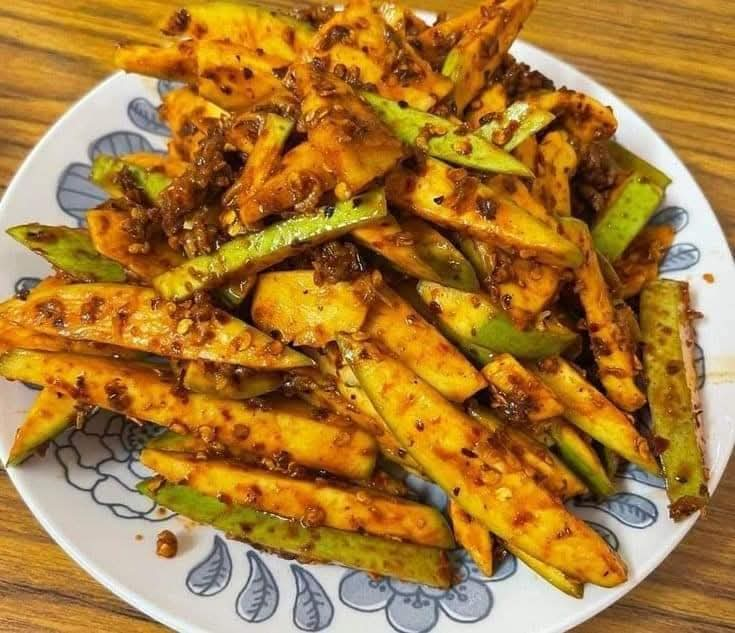

The middle part of Myanmar is the hot and dried area. However, the combination of hot with the rain that comes once in a while make onion, garlic, palm, and different kinds of bean and pea happen. These products as main food sources, people in the middle Myanmar create tasteful cuisines.

Fried tamarind with dried shrimp
As one of the tamarind cultivated countries, Myanmar people love to eat tamarind. RefenreceAbundant tamarind fruits cultivated in Summer is one of main ingredient for the middle part. Sour taste of tamarind combined with the salty dried shrimp with chili powders is a side dish will definitely make you to finish two big plates of rice.

Burmese Jaggery
Long palm trees take place in the scene of middle Myanmar. Burmese jaggeries are made with palm juice also known as Burmese chocolate. Since jaggery has benefits for health, Burmese people love to eat as dessert after meal.Reference Burmese jaggery are widely used as main ingredient for Burmese snacks and deserts.

Ponyaykyi with pork
Fermented bean paste, Ponyaykyi is one of the main products that is produced proudly in the middle part. Black Ponyaykyi may not look pretty but it gives the unforgettable savory taste. Ponyaykyi is eaten in many ways and the most popular one is Ponyaykyi curry with pork.

Green Mango Salad
The hot weather of the middle part makes people carving a sour fresh fruit. Unripe mango, green mango with salty fermented fish paste and spicy chilies is one of main snacks eaten in the middle part.